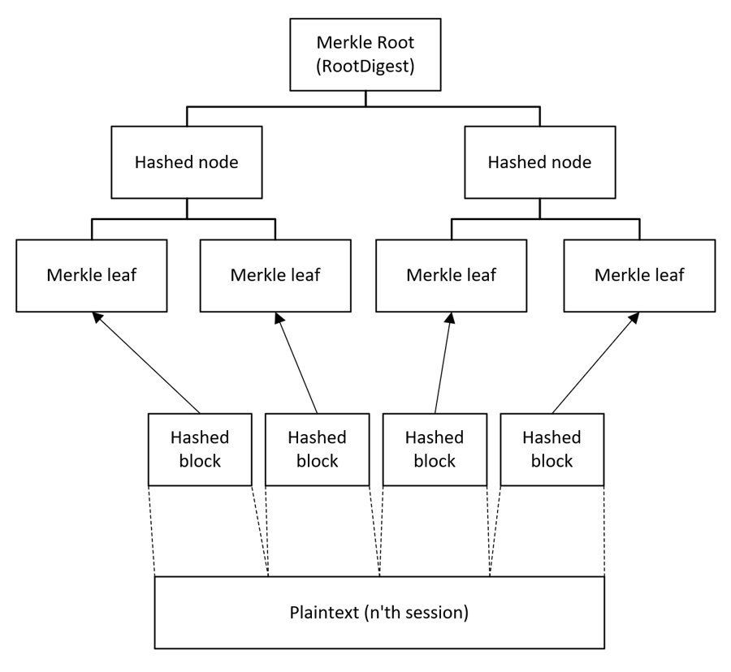
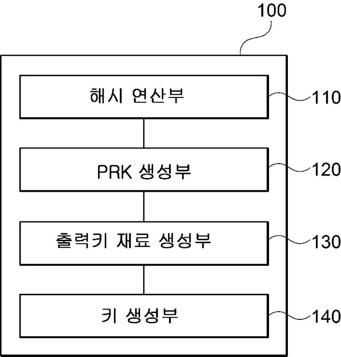
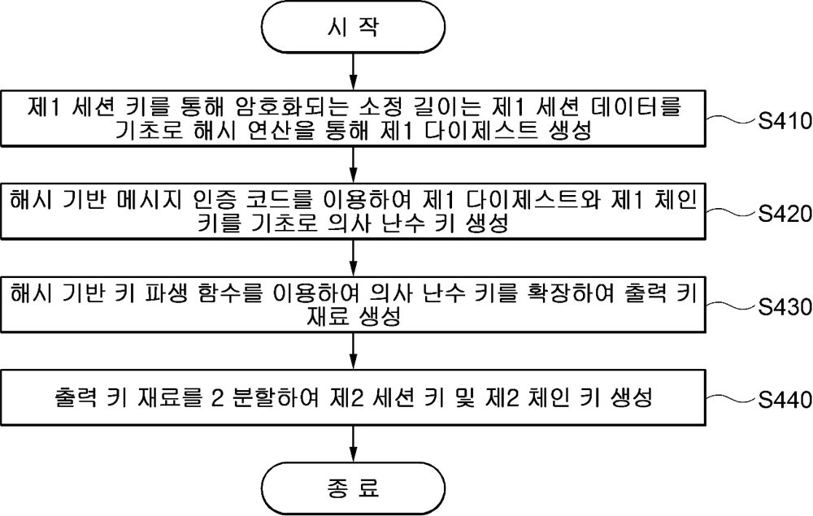

대표 프로젝트#HKDF#HMAC#Merkle Tree#SHA-256
평문 기반 대칭-라쳇 키 생성 (특허 출원)
경희대 MESL 학부연구생 · 2026.02.13 출원 · 발명자 3인
출원번호 10-2026-0029765 · 출원인 경희대학교 산학협력단 · 발명자 3인(지도교수, 대학원생, 본인) · 청구항 15개 · 심사청구
- 문제
- 대칭키는 만료될 때마다 새 키를 교환해야 합니다. 라우터 하나에 기기 수백 대가 몰린 IoT 환경에서는 이 키 교환 트래픽이 커집니다. 체인 키 하나로만 다음 키를 만들면 그 키가 노출될 때 미래 키도 위험해집니다.
- 접근
- 세션 동안 주고받은 평문을 머클 트리로 해시한 다이제스트와 체인 키를 HMAC, HKDF로 결합합니다. 양쪽 기기가 같은 평문을 갖고 있으니 각자 같은 다음 키를 계산합니다.
- 효과
- 키 교환 패킷 없이 키를 갱신합니다. 공격자는 세션 평문 전체를 복제해야 다음 키를 계산할 수 있고, 쓴 키는 폐기해 전방향 비밀성을 유지합니다.
키 갱신 한 단계
세션 키를 그대로 다음 키 생성에 쓰면, 그 세션 키가 풀렸을 때 공격자가 다음 키까지 따라갈 수 있습니다. 그래서 출력을 64바이트로 늘려 절반은 데이터 암호화용 세션 키로, 나머지 절반은 밖으로 나가지 않는 체인 키로 씁니다.
출원 도면과 발표 자료




양쪽 키를 맞추는 방법
- 상대가 ACK로 확인한 바이트까지만 다이제스트에 넣습니다(ACK Commit Rule).
- 복호나 무결성 검증에 실패하면 KeyUpdate Reject로 키 갱신을 멈추고 재전송합니다.
- 송신 측이 이미 키를 바꿨다면 이전 상태로 롤백합니다.
- 순서가 뒤바뀐 메시지는 일정 개수까지 보관했다가 순서대로 트리에 넣습니다.
적용 분야로는 메신저와 원격회의처럼 암호화 트래픽이 많은 서비스, 저전력 IoT와 스마트팩토리를 적었습니다. 해시와 HKDF만 쓰기 때문에 연산이 가볍습니다.
담당
- 단일 파생 키를 세션 암호화와 다음 키 생성에 함께 쓰면, 세션 키가 노출됐을 때 다음 키까지 추적될 수 있다는 취약점 식별
- 대안 검토
- 출력을 64바이트로 늘려 세션 키와 체인 키로 나누는 키 분리 구조 제안